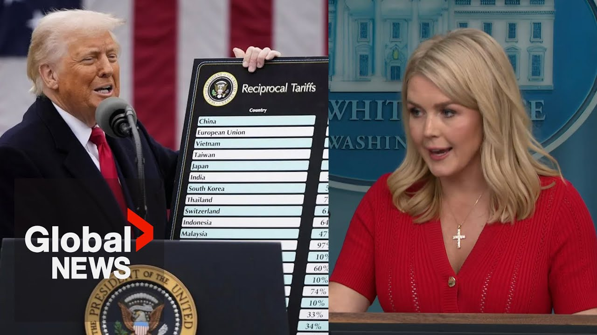

【美国贸易法院“公然滥用”司法权力阻止特朗普关税，白宫表示】
Summary: The White House accuses the US Court of International Trade of overstepping its authority by blocking Trump's tariffs, arguing the president has constitutional powers to protect national security and the economy, and vows to appeal the decision all the way to the Supreme Court.
摘要： 白宫指责美国国际贸易法院越权阻止特朗普的关税政策，坚称总统拥有保护国家安全和经济的宪法权力，并誓言将上诉至最高法院。

⏱️ Estimated Reading Time: 4 min
The president's rationale for imposing these powerful tariffs was legally sound and grounded in common sense.
总统实施这些强力关税的理由在法律上是合理的，并且基于常识。
Three jud judges of the US Court of International Trade disagreed and brazenly abused their judicial power to usurp the authority of President Trump to stop him from carrying out the mandate that the American people gave him.
美国国际贸易法院的三名法官不同意这一观点，并公然滥用司法权力，篡夺特朗普总统的职权，阻止他执行美国人民赋予他的使命。
These judges failed to acknowledge that the president of the United States has core foreign affairs powers and authority given to him by Congress to protect the United States economy and national security.
这些法官未能承认美国总统拥有国会赋予的核心外交权力和职权，以保护美国经济和国家安全。
The courts should have no role here.
法院在此不应发挥作用。
There is a troubling and dangerous trend of unelected judges inserting themselves into the presidential decision-making process.
存在一种令人不安且危险的趋势，即未经选举的法官干预总统的决策过程。
America cannot function if President Trump or any other president for that matter has their sensitive diplomatic or trade negotiations railroaded by activist judges.
如果特朗普总统或其他任何总统的敏感外交或贸易谈判被激进法官左右，美国将无法正常运转。
These judges are threatening to undermine the credibility of the United States on the world stage.
这些法官正威胁损害美国在世界舞台上的信誉。
The administration has already filed an emergency motion for a stay pending appeal and an immediate administrative stay to strike down this egregious decision.
政府已提交紧急动议，要求在上诉期间暂缓执行，并立即采取行政暂缓以推翻这一恶劣裁决。
But ultimately, the Supreme Court must put an end to this for the sake of our constitution and our country.
但最终，为了我们的宪法和国家，最高法院必须终结这一行为。
There is an effort by this administration to tackle these rogue judges and the injunctions and the the blockades that we have faced in our broken judicial system in every case.
本届政府正努力应对这些不守规矩的法官，以及我们在破碎的司法系统中每起案件面临的禁令和阻碍。
I mean, we have seen time and time again these lower district court judges ruling against this administration in the president's basic executive authority and powers.
我的意思是，我们一再看到这些下级地方法院法官在总统的基本行政权力和职权上作出不利于本届政府的裁决。
And this administration is fighting every single one of those battles in court, including already the uh block that came down from the tra the tariff uh court, the AIPA court last night.
本届政府正在法庭上逐一应对这些挑战，包括昨晚来自关税法院（AIPA法院）的阻碍。
Um and as on my way out here to the briefing room, I understand that there was another district court judge right here in Washington DC who ruled against the president's tariff power.
在我前往简报室的路上，我了解到华盛顿特区又有一名地方法院法官作出不利于总统关税权力的裁决。
The administration is operating under the directive given to the pre from the president that we need to comply with the court's orders.
政府正按照总统的指示行事，即我们需要遵守法院的命令。
He's made that very clear, but we're going to fight them in court and we're going to win on the merits of these cases because we know we are acting within the president's legal and executive authorities.
他已明确表示这一点，但我们将在法庭上抗争，并基于案件的是非曲直获胜，因为我们知道我们是在总统的法律和行政权限内行事。
Other countries around the world have faith in the negotiator and chief, President Donald J. Trump, and they also probably see how ridiculous this ruling is, and they understand that the administration is going to win.
世界其他国家信任首席谈判代表唐纳德·J·特朗普总统，他们可能也认为这一裁决荒谬，并明白政府将获胜。
And we intend to win.
我们志在必得。
We already filed an emergency appeal.
我们已提交紧急上诉。
We expect to fight this battle all the way to the Supreme Court.
我们预计将这场斗争进行到底，直至最高法院。
These other countries should also know and they do know that the president reserves other tariff authorities section 232 for example um to ensure that America's interests are being restored around the world.
这些其他国家也应该知道，而且他们确实知道，总统保留其他关税权力，例如232条款，以确保美国在全球的利益得到恢复。
Does the president wish he would have just become a judge instead?
总统是否希望自己当初成为一名法官？
I think the president would take this job over being a judge and certainly the president is acting within his authority.
我认为总统宁愿选择现在的工作而非法官，而且他确实是在自己的权限内行事。
He wishes judges would do the same.
他希望法官也能如此。